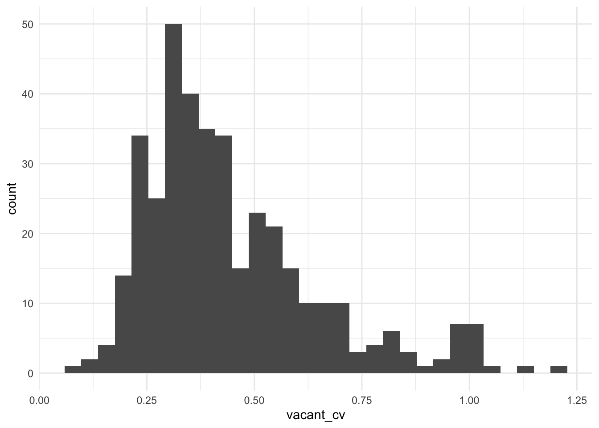
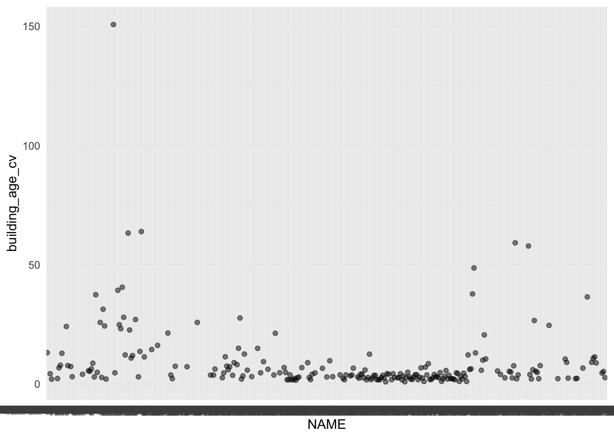
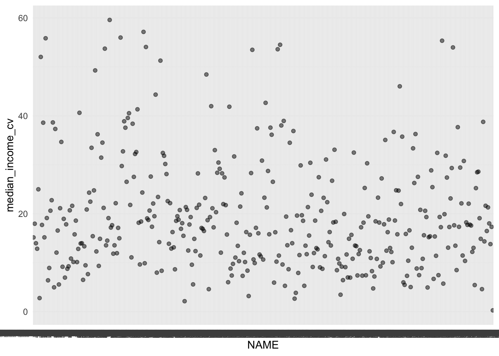
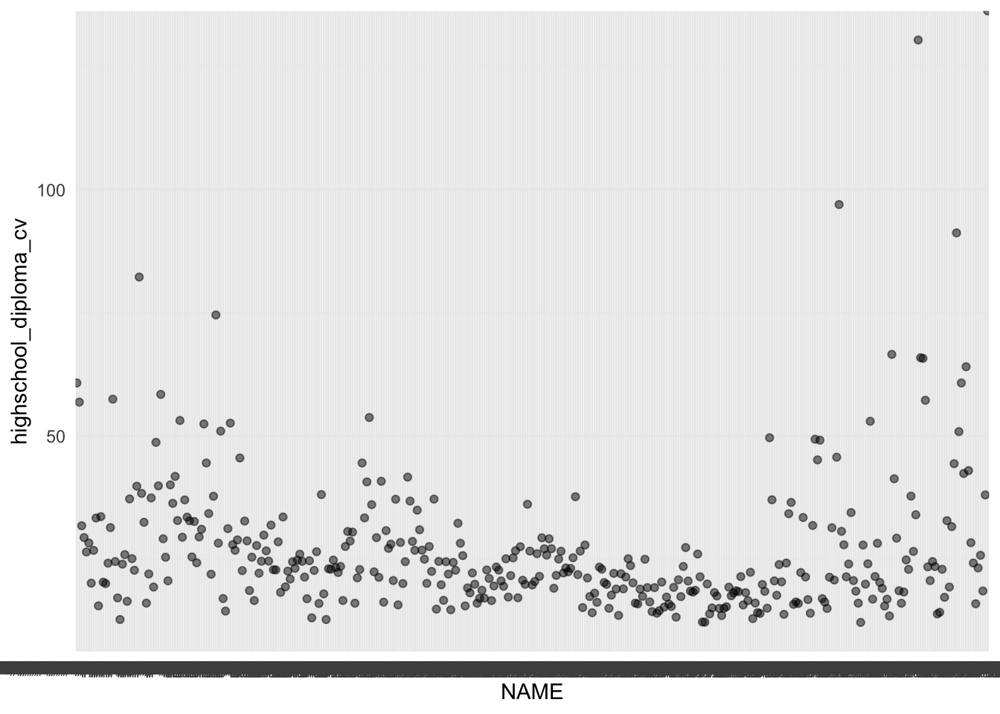
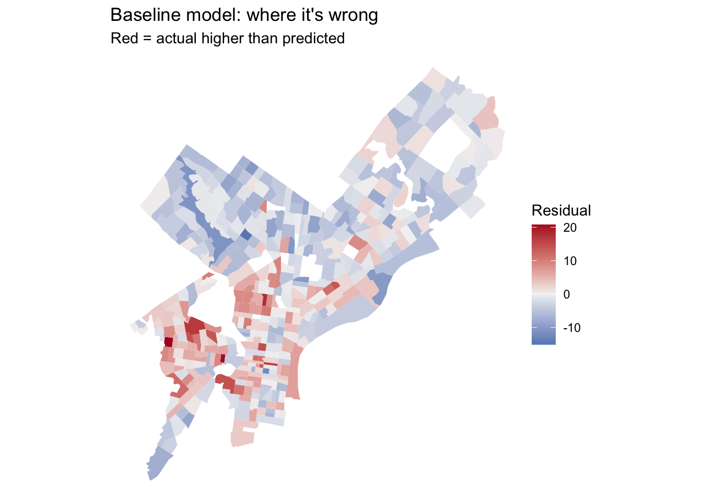
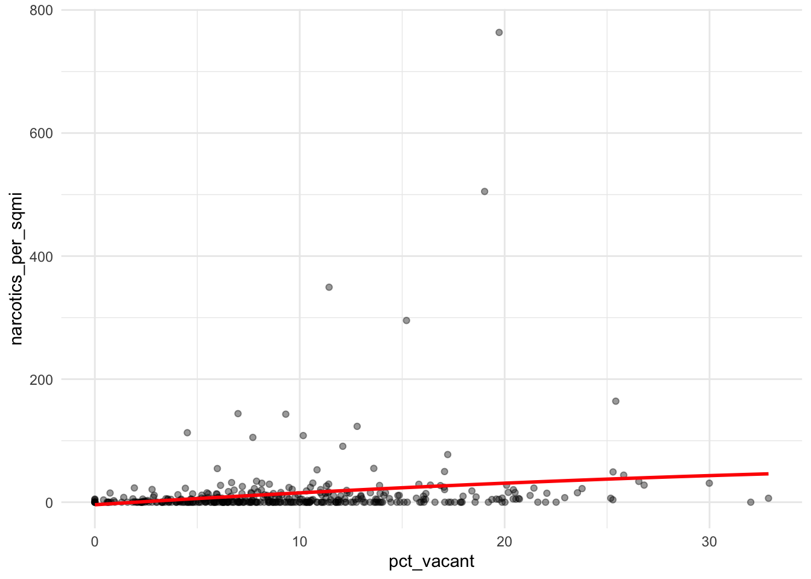
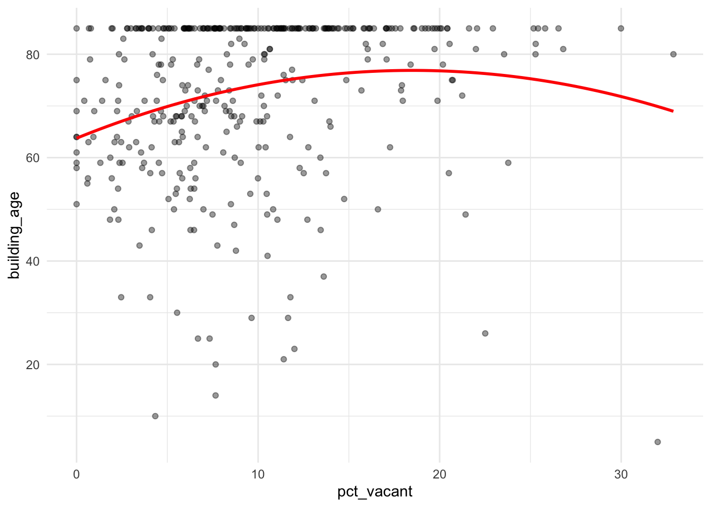
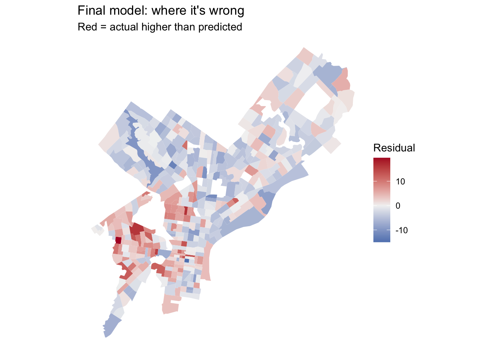
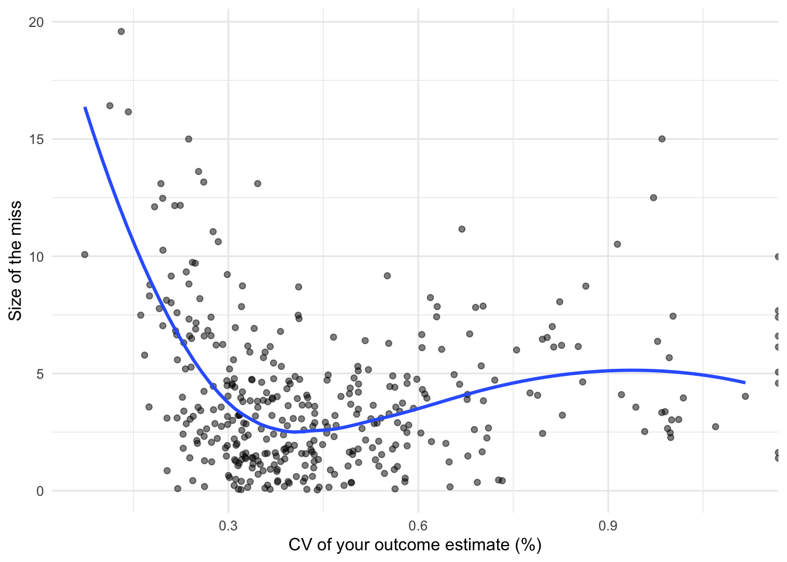

Code
library(tidyverse)
library(tidycensus)
library(sf)
library(caret)
Sys.getenv("CENSUS_API_KEY") != "" [1] TRUEMUSA 5080 · Integrates Weeks 1–5 · Due Friday, October 16
. ### Three rules that apply everywhere
Every model is cross-validated on the same tracts with the same folds, so the rows in your model log are comparable. If a new variable has missing values, fill them (for example, 0 for a count, or the median with a note) or choose a different variable. The cv_rmse() helper below will stop and tell you if you break this rule.
Your outcome comes from the 2019–2023 ACS. Pull open data from 2023 or earlier (2021–2023 is ideal). Using 2025 data to predict a 2023 outcome uses information from the future, which a real prediction model would never have.
Don’t use any variable that’s built from your outcome or measures the same thing another way. Ask yourself: would an agency trying to predict this outcome for a tract have this variable? If the answer is “only because it’s basically the outcome,” leave it out.
library(tidyverse)
library(tidycensus)
library(sf)
library(caret)
Sys.getenv("CENSUS_API_KEY") != "" [1] TRUEThis function runs 10-fold cross-validation with the same seed every time, so every model in your log is tested on the same folds.
ctrl <- trainControl(method = "cv", number = 10)
cv_rmse <- function(formula, data) {
df <- if (inherits(data, "sf")) st_drop_geometry(data) else data
vars <- all.vars(formula)
bad <- vars[sapply(vars, function(v) any(is.na(df[[v]])))]
if (length(bad) > 0) {
stop("These variables have NAs: ", paste(bad, collapse = ", "),
". Fill them or choose another variable (Rule 1: don't drop rows).")
}
set.seed(5080)
fit <- train(formula, data = df, method = "lm", trControl = ctrl)
fit$results$RMSE
}Every time you fit a new model, add a row.
model_log <- tibble(
model = character(),
added = character(),
cv_rmse = numeric(),
notes = character()
)Pick a tract-level ACS variable for Philadelphia that matters for policy:
load_variables(2023, "acs5")# A tibble: 28,261 × 4
name label concept geography
<chr> <chr> <chr> <chr>
1 B01001A_001 Estimate!!Total: Sex by Age (W… tract
2 B01001A_002 Estimate!!Total:!!Male: Sex by Age (W… tract
3 B01001A_003 Estimate!!Total:!!Male:!!Under 5 years Sex by Age (W… tract
4 B01001A_004 Estimate!!Total:!!Male:!!5 to 9 years Sex by Age (W… tract
5 B01001A_005 Estimate!!Total:!!Male:!!10 to 14 years Sex by Age (W… tract
6 B01001A_006 Estimate!!Total:!!Male:!!15 to 17 years Sex by Age (W… tract
7 B01001A_007 Estimate!!Total:!!Male:!!18 and 19 years Sex by Age (W… tract
8 B01001A_008 Estimate!!Total:!!Male:!!20 to 24 years Sex by Age (W… tract
9 B01001A_009 Estimate!!Total:!!Male:!!25 to 29 years Sex by Age (W… tract
10 B01001A_010 Estimate!!Total:!!Male:!!30 to 34 years Sex by Age (W… tract
# ℹ 28,251 more rowsChoose three to five ACS predictors for your baseline model. They should be things that plausibly relate to your outcome, but none of them may be built from your outcome (Rule 3).
philly_tracts <- get_acs(
geography = "tract",
state = "PA",
county = "Philadelphia",
variables = c(
total_pop = "B01003_001",
total_units = "B25002_001",
vacant_units = "B25002_003",
year_built = "B25035_001",
median_income = "B19013_001",
highschool_diploma = "B15003_017"
),
year = 2023,
survey = "acs5",
output = "wide",
geometry = TRUE
) %>%
st_transform(2272)
|
| | 0%
|
|= | 1%
|
|= | 2%
|
|== | 3%
|
|=== | 4%
|
|=== | 5%
|
|==== | 6%
|
|===== | 7%
|
|====== | 8%
|
|====== | 9%
|
|======= | 10%
|
|======== | 11%
|
|======== | 12%
|
|========= | 13%
|
|========== | 14%
|
|========== | 15%
|
|=========== | 16%
|
|============ | 17%
|
|============ | 18%
|
|============= | 19%
|
|============== | 20%
|
|=============== | 21%
|
|=============== | 22%
|
|================ | 23%
|
|================= | 24%
|
|================= | 25%
|
|================== | 26%
|
|=================== | 27%
|
|==================== | 28%
|
|==================== | 29%
|
|===================== | 30%
|
|====================== | 31%
|
|====================== | 32%
|
|======================= | 33%
|
|======================== | 34%
|
|======================== | 35%
|
|========================= | 36%
|
|========================== | 37%
|
|========================== | 38%
|
|============================ | 39%
|
|============================ | 40%
|
|============================= | 41%
|
|============================== | 42%
|
|============================== | 43%
|
|=============================== | 44%
|
|================================ | 45%
|
|================================ | 46%
|
|================================= | 47%
|
|================================== | 48%
|
|================================== | 49%
|
|=================================== | 50%
|
|==================================== | 51%
|
|===================================== | 52%
|
|===================================== | 53%
|
|====================================== | 54%
|
|======================================= | 55%
|
|======================================= | 56%
|
|======================================== | 57%
|
|========================================= | 58%
|
|========================================= | 59%
|
|========================================== | 60%
|
|=========================================== | 61%
|
|=========================================== | 62%
|
|============================================ | 63%
|
|============================================= | 64%
|
|============================================= | 65%
|
|============================================== | 66%
|
|=============================================== | 67%
|
|================================================ | 68%
|
|================================================ | 69%
|
|================================================= | 70%
|
|================================================== | 71%
|
|================================================== | 72%
|
|=================================================== | 73%
|
|==================================================== | 74%
|
|==================================================== | 75%
|
|===================================================== | 76%
|
|====================================================== | 77%
|
|====================================================== | 78%
|
|======================================================= | 79%
|
|======================================================== | 80%
|
|======================================================== | 81%
|
|========================================================== | 82%
|
|========================================================== | 83%
|
|=========================================================== | 84%
|
|============================================================ | 85%
|
|============================================================ | 86%
|
|============================================================= | 87%
|
|============================================================== | 88%
|
|============================================================== | 89%
|
|=============================================================== | 90%
|
|================================================================ | 91%
|
|================================================================= | 92%
|
|================================================================= | 93%
|
|================================================================== | 94%
|
|=================================================================== | 95%
|
|=================================================================== | 96%
|
|==================================================================== | 97%
|
|===================================================================== | 98%
|
|===================================================================== | 99%
|
|======================================================================| 100%philly_tracts <- philly_tracts %>%
mutate(
pct_vacant = vacant_unitsE / total_unitsE * 100,
vacant_moe = moe_prop(vacant_unitsE, total_unitsE, vacant_unitsM, total_unitsM),
vacant_cv = (vacant_moe / 1.645) / pct_vacant * 100,
# predictors:
building_age = (2023 - year_builtE),
building_age_moe = year_builtM,
building_age_cv = (building_age_moe / 1.645) / building_age * 100,
median_income_moe = median_incomeM,
median_income_cv = (median_income_moe / 1.645) / median_incomeE* 100,
highschool_diploma_moe = highschool_diplomaM,
highschool_diploma_cv = (highschool_diploma_moe / 1.645) / highschool_diplomaE * 100
)Before you commit, check three things.
# How many tracts have no value for your outcome? 19 tracts.
sum(is.na(philly_tracts$pct_vacant))[1] 19# How reliable is it?
summary(philly_tracts$vacant_cv) Min. 1st Qu. Median Mean 3rd Qu. Max. NA's
0.07322 0.30938 0.39444 Inf 0.55936 Inf 19 philly_tracts %>%
mutate(reliability = case_when(
vacant_cv < 12 ~ "High",
vacant_cv <= 40 ~ "Moderate",
TRUE ~ "Low"
)) %>%
st_drop_geometry() %>%
count(reliability) reliability n
1 High 379
2 Low 29# What does the distribution look like?
ggplot(philly_tracts, aes(x = vacant_cv)) +
geom_histogram(bins = 30) +
theme_minimal()
My outcome variable is percentage of vacant units. The model is relatively reliable. 379 tracts have high reliability, 29 tracts have low reliability, and 19 tracts have no outcome. An agency may want to predict where vacancy is concentrated to intentionally invest in housing development or improve building conditions.
tracts <- philly_tracts %>%
filter(total_popE > 0,
!is.na(pct_vacant),
!is.na(building_age),
!is.na(median_incomeE),
!is.na(highschool_diplomaE)
)
nrow(philly_tracts)[1] 408nrow(tracts)[1] 381I lost 19 tracts, which were generally concentrated close to industrial use areas that have small populations.
Plot your outcome against each predictor before modeling.
# one scatterplot per predictor, e.g.:
ggplot(tracts, aes(x = NAME, y = building_age_cv)) + geom_point(alpha = 0.5) +
geom_smooth(method = "lm", se = FALSE) + theme_minimal()
ggplot(tracts, aes(x = NAME, y = median_income_cv)) + geom_point(alpha = 0.5) +
geom_smooth(method = "lm", se = FALSE) + theme_minimal()
ggplot(tracts, aes(x = NAME, y = highschool_diploma_cv)) + geom_point(alpha = 0.5) +
geom_smooth(method = "lm", se = FALSE) + theme_minimal()
f1 <- pct_vacant ~ building_age + median_incomeE + highschool_diplomaE
m1 <- lm(f1, data = tracts)
summary(m1)
Call:
lm(formula = f1, data = tracts)
Residuals:
Min 1Q Median 3Q Max
-15.1326 -3.8836 -0.7391 3.1510 20.7569
Coefficients:
Estimate Std. Error t value Pr(>|t|)
(Intercept) 1.374e+01 1.716e+00 8.007 1.48e-14 ***
building_age 5.709e-02 1.827e-02 3.125 0.00191 **
median_incomeE -7.105e-05 9.455e-06 -7.514 4.20e-13 ***
highschool_diplomaE -4.870e-03 6.517e-04 -7.473 5.54e-13 ***
---
Signif. codes: 0 '***' 0.001 '**' 0.01 '*' 0.05 '.' 0.1 ' ' 1
Residual standard error: 5.479 on 377 degrees of freedom
Multiple R-squared: 0.2025, Adjusted R-squared: 0.1962
F-statistic: 31.92 on 3 and 377 DF, p-value: < 2.2e-16model_log <- model_log %>%
add_row(model = "m1", added = "ACS baseline",
cv_rmse = cv_rmse(f1, tracts),
notes = "___")
model_log# A tibble: 1 × 4
model added cv_rmse notes
<chr> <chr> <dbl> <chr>
1 m1 ACS baseline 5.45 ___ On tracts it hasn’t seen, the baseline model misses by about 5.44 percentage points.
tracts <- tracts %>% mutate(resid_m1 = residuals(m1))
ggplot(tracts) +
geom_sf(aes(fill = resid_m1), color = NA) +
scale_fill_gradient2(low = "#2166ac", mid = "grey95", high = "#b2182b", midpoint = 0) +
theme_void() +
labs(title = "Baseline model: where it's wrong",
subtitle = "Red = actual higher than predicted",
fill = "Residual")
Where do the residuals cluster? What might those places have in common that your model doesn’t know about?
The residuals cluster around West Philadelphia, Brewerytown, and Old City. This might be because housing stock in these locations are on the older side (considering the variable building age) but well maintained, so in this instance the building age variable is not a helpful indicator of proximity to vacant lots.
Many of the city’s datasets on OpenDataPhilly are served through a Carto SQL API. You send a SQL query in a URL, and it sends back data. Ask for format=GeoJSON and st_read() reads the result directly.
The pattern:
https://phl.carto.com/api/v2/sql?format=GeoJSON&q=SELECT ... FROM table_name WHERE ...Three pieces of SQL are all you need:
SELECT the_geom, column1, column2 chooses which columns come back. Always include the_geom, or you get no geometry.FROM table_name chooses the dataset.WHERE ... filters rows. Filter in the query, not in R. Some tables have millions of rows, and pulling everything will be slow or fail.This helper builds the URL for you. Spaces and symbols in a URL need encoding, and URLencode() handles that.
carto_get <- function(sql) {
url <- paste0("https://phl.carto.com/api/v2/sql?format=GeoJSON&q=", URLencode(sql))
st_read(url, quiet = TRUE)
}On a dataset’s OpenDataPhilly page, look for the API link. The table name is the word after FROM in the example query. To see what values a column takes before you filter on it, ask for a count in CSV format:
# What kinds of crime are in the incidents table in 2023?
url <- paste0("https://phl.carto.com/api/v2/sql?format=csv&q=",
URLencode("SELECT text_general_code, COUNT(*) AS n
FROM incidents_part1_part2
WHERE dispatch_date >= '2023-01-01' AND dispatch_date < '2024-01-01'
GROUP BY text_general_code ORDER BY n DESC"))
read_csv(url)# A tibble: 32 × 2
text_general_code n
<chr> <dbl>
1 Thefts 37054
2 Other Assaults 25986
3 Motor Vehicle Theft 22478
4 Vandalism/Criminal Mischief 17346
5 All Other Offenses 13334
6 Theft from Vehicle 13002
7 Fraud 7661
8 Aggravated Assault No Firearm 5134
9 Burglary Residential 3800
10 Aggravated Assault Firearm 3320
# ℹ 22 more rowsburglary <- carto_get(
"SELECT the_geom, text_general_code, dispatch_date
FROM incidents_part1_part2
WHERE dispatch_date >= '2023-01-01' AND dispatch_date < '2024-01-01'
AND text_general_code = 'Burglary Residential'"
) %>%
st_transform(st_crs(tracts)) # Carto returns EPSG 4326; translate immediately
nrow(burglary)[1] 3800burglary <- burglary %>%
filter(!st_is_empty(burglary))
nrow(burglary)[1] 3681119 points were lost.
| Data | Table | Filter on | Notes |
|---|---|---|---|
| Crime incidents | incidents_part1_part2 |
dispatch_date, text_general_code |
Pick specific offense types |
| Shooting victims | shootings |
date_ |
Small enough to pull several years |
| 311 requests | public_cases_fc |
requested_datetime, service_name |
Use the count query above to see service names |
| Indego stations | (not Carto) https://www.rideindego.com/stations/json/ |
— | The Week 4 feed |
landmarks <- st_read(“https://hub.arcgis.com/api/v3/datasets/6b2fe4a0fbe14e0a8e6afceaea230b8e_0/downloads/data?format=geojson&spatialRefId=4326&where=1%3D1”)
Pull at least two layers that you think relate to your outcome.
url <- paste0(
"https://phl.carto.com/api/v2/sql?format=csv&q=",
URLencode(
"SELECT service_name, COUNT(*) AS n
FROM public_cases_fc
WHERE requested_datetime >= '2023-01-01'
AND requested_datetime < '2024-01-01'
GROUP BY service_name
ORDER BY n DESC"
)
)
read_csv(url)# A tibble: 50 × 2
service_name n
<chr> <dbl>
1 Information Request 296790
2 Maintenance Complaint 32092
3 Abandoned Vehicle 31131
4 Rubbish/Recyclable Material Collection 27548
5 Illegal Dumping 22600
6 Graffiti Removal 15101
7 Street Defect 13672
8 Street Light Outage 12861
9 Sanitation Violation 7171
10 Construction Complaints 7029
# ℹ 40 more rowsinforequests <- carto_get(
"SELECT the_geom, service_name, requested_datetime
FROM public_cases_fc
WHERE requested_datetime >= '2023-01-01' AND requested_datetime < '2024-01-01'
AND service_name = 'Illegal Dumping'"
) %>%
st_transform(st_crs(tracts))
narcanadmin <- st_read("https://hub.arcgis.com/api/v3/datasets/d298d1b83a3e4eb2a2eb28357943c7bd_0/downloads/data?format=geojson&spatialRefId=4326&where=1%3D1")Reading layer `stat360_narcan_administrations' from data source
`https://hub.arcgis.com/api/v3/datasets/d298d1b83a3e4eb2a2eb28357943c7bd_0/downloads/data?format=geojson&spatialRefId=4326&where=1%3D1'
using driver `GeoJSON'
replacing null geometries with empty geometries
Simple feature collection with 59 features and 10 fields (with 59 geometries empty)
Geometry type: GEOMETRYCOLLECTION
Dimension: XY
Bounding box: xmin: NA ymin: NA xmax: NA ymax: NA
Geodetic CRS: WGS 84## doesn't work because collected at zip code level
narcotics_activity <-st_read("https://hub.arcgis.com/api/v3/datasets/fa192bf1d10342388d26d5a8532a322a_0/downloads/data?format=geojson&spatialRefId=4326&where=1%3D1") %>%
st_transform(st_crs(tracts)) Reading layer `narcotics_hex_centroids' from data source
`https://hub.arcgis.com/api/v3/datasets/fa192bf1d10342388d26d5a8532a322a_0/downloads/data?format=geojson&spatialRefId=4326&where=1%3D1'
using driver `GeoJSON'
Simple feature collection with 1052 features and 7 fields
Geometry type: POINT
Dimension: XY
Bounding box: xmin: -75.26585 ymin: 39.87585 xmax: -74.97068 ymax: 40.1003
Geodetic CRS: WGS 84Why these layers? What do you expect them to capture that the ACS variables don’t?
I pulled 311 requests about illegal dumping and narcotics activity. These data tell us information about how people use space that ACS variables can’t capture. I hypothesize that people may be more likely to illegally dump or use drugs on or near vacant property.
How many burglaries fall in each tract?
tracts <- tracts %>%
mutate(n_burglary = lengths(st_intersects(., burglary)))
summary(tracts$n_burglary) Min. 1st Qu. Median Mean 3rd Qu. Max.
0.000 4.000 7.000 9.446 13.000 48.000 A tract with no burglaries gets 0, not NA, so Rule 1 is safe.
Raw counts mostly measure tract size. A big tract has more of everything. Normalize by area, by population, or by housing units, depending on what makes sense for the thing you’re counting.
tracts <- tracts %>%
mutate(
area_sqmi = as.numeric(st_area(.)) / 27878400, # sq ft in a sq mile
burglary_per_sqmi = n_burglary / area_sqmi,
burglary_per_1k = n_burglary / total_popE * 1000
)If a tract has 40 residents and 3 burglaries, its rate is 75 per 1,000, which is a huge number built on tiny counts. Look at the tracts with the highest per-capita rates before you trust them. This is the Week 3 lesson about small denominators again.
How far is each tract from its nearest Indego station? Use the Week 4 pattern: find the nearest feature, then measure to it element by element.
stations <- st_read("https://www.rideindego.com/stations/json/", quiet = TRUE) %>%
st_transform(st_crs(tracts))
tract_pts <- st_point_on_surface(tracts) # always inside the tract, unlike a centroid
nearest_idx <- st_nearest_feature(tract_pts, stations)
tracts <- tracts %>%
mutate(dist_station_mi = as.numeric(
st_distance(tract_pts, stations[nearest_idx, ], by_element = TRUE)) / 5280)Sometimes the “thing” is a single location, such as City Hall as a stand-in for the center of the regional economy.
city_hall <- st_sfc(st_point(c(-75.1636, 39.9526)), crs = 4326) %>%
st_transform(st_crs(tracts))
tracts <- tracts %>%
mutate(dist_ch_mi = as.numeric(st_distance(tract_pts, city_hall)) / 5280)Build at least three spatial features from your own layers, and use at least two types (count, density, nearest distance, distance to a place). After each one, fit a model, cross-validate it, and log it.
tracts <- tracts %>%
mutate(n_inforequest = lengths(st_intersects(., inforequests)))
summary(tracts$n_inforequests)Length Class Mode
0 NULL NULL #| label: narcotics activity count
tracts <- tracts %>%
mutate(n_narcoticsactivity = lengths(st_intersects(., narcotics_activity)))
summary(tracts$n_narcoticsactivity) Min. 1st Qu. Median Mean 3rd Qu. Max.
0.000 0.000 1.000 2.635 2.000 96.000 #| label: narcotics activity density
tracts <- tracts %>%
mutate(
area_sqmi = as.numeric(st_area(.)) / 27878400, # sq ft in a sq mile
narcotics_per_sqmi = n_narcoticsactivity / area_sqmi,
narcotics_per_1k = n_narcoticsactivity / total_popE * 1000
)
f2 <- pct_vacant ~ building_age + median_incomeE + highschool_diplomaE + n_inforequest
model_log <- model_log %>%
add_row(model = "m2", added = "Illegal Dumping Request Count",
cv_rmse = cv_rmse(f2, tracts),
notes = "___")
# repeat for each feature
f3 <- pct_vacant ~ building_age + median_incomeE + highschool_diplomaE + n_narcoticsactivity
model_log <- model_log %>%
add_row(model = "m3", added = "Narcotics Activity Count",
cv_rmse = cv_rmse(f3, tracts),
notes = "___")
f4 <- pct_vacant ~ building_age + median_incomeE + highschool_diplomaE + narcotics_per_sqmi
model_log <- model_log %>%
add_row(model = "m4", added = "Narcotics Activity Per Square Mile",
cv_rmse = cv_rmse(f4, tracts),
notes = "___")
f5 <- pct_vacant ~ building_age + median_incomeE + highschool_diplomaE + narcotics_per_sqmi + n_narcoticsactivity + n_inforequest
model_log <- model_log %>%
add_row(model = "m5", added = "Illegal Dumping + Narcotics Activity Count/Density",
cv_rmse = cv_rmse(f5, tracts),
notes = "___") Which spatial feature helped most? Did any feature you expected to help do nothing, or make CV RMSE worse? Why might that be?
Adding illegal dumping requests by count reduced the CV RMSE by 3.3% compared to the ACS baseline, suggesting that reported illegal dumping activity provides additional predictive information about neighborhood vacancy rates. Adding narcotics activity by count and density reduced the CV RMSE only marginally, by just .31% and .37% respectively compared to the ACS baseline. These findings suggest that these features can be helpful predictors of vacant lots. Interestingly, combining all three factors increased the CV RMSE by 1.74% than the baseline.
So far, every predictor has entered the model as a straight line: each additional unit of X changes predicted Y by the same amount, everywhere. Transformations let the model bend. For prediction, the question is simply does the bend lower CV RMSE? For interpretation, each transformation changes what a coefficient means, so you need to know how to read it.
Keep your outcome y untransformed in this assignment. If you model log(y), your CV RMSE comes out in log units and can’t be compared to the other rows in your log. (Predicting a logged outcome well requires back-transforming, which is an A4 topic.)
Many urban variables are skewed: a few tracts have huge values, and most have small ones. Income, density, and counts are typical. A log compresses the long tail, so a model can use the difference between 1 and 10 as well as the difference between 100 and 1,000.
ggplot(tracts, aes(x = burglary_per_sqmi)) + geom_histogram(bins = 30) + theme_minimal()
ggplot(tracts, aes(x = log1p(burglary_per_sqmi))) + geom_histogram(bins = 30) + theme_minimal()
log(0) is -Inf, and it will break your model. Counts and densities often include zeros. Use log1p(x), which computes log(x + 1), for anything that can be 0.
Reading the coefficient: when a predictor is logged, a 1% increase in X goes with a change of about β/100 in Y, in Y’s units. With log1p, this reading is approximate for small values of X.
If your scatterplot bends (rising and then flattening, or falling and then rising), a squared term lets the line curve. Write it with I(), which tells R to do the arithmetic rather than read ^ as formula syntax.
m_sq <- lm(pct_vacant ~ narcotics_per_sqmi + I(narcotics_per_sqmi^2), data = tracts)
summary(m_sq)
Call:
lm(formula = pct_vacant ~ narcotics_per_sqmi + I(narcotics_per_sqmi^2),
data = tracts)
Residuals:
Min 1Q Median 3Q Max
-9.517 -4.205 -1.142 3.181 23.481
Coefficients:
Estimate Std. Error t value Pr(>|t|)
(Intercept) 9.078e+00 3.320e-01 27.349 < 2e-16 ***
narcotics_per_sqmi 4.979e-02 1.397e-02 3.563 0.000414 ***
I(narcotics_per_sqmi^2) -5.272e-05 2.304e-05 -2.288 0.022694 *
---
Signif. codes: 0 '***' 0.001 '**' 0.01 '*' 0.05 '.' 0.1 ' ' 1
Residual standard error: 5.98 on 378 degrees of freedom
Multiple R-squared: 0.04734, Adjusted R-squared: 0.0423
F-statistic: 9.391 on 2 and 378 DF, p-value: 0.0001046Reading the coefficient: you can’t read either coefficient alone anymore. The effect of X depends on where you are along X. A positive linear term with a negative squared term means Y rises with X and then levels off or turns down. Plot the fitted curve to see it:
ggplot(tracts, aes(x = pct_vacant, y = narcotics_per_sqmi)) +
geom_point(alpha = 0.4) +
geom_smooth(method = "lm", formula = y ~ x + I(x^2), se = FALSE, color = "red") +
theme_minimal()
Sometimes a number works better as groups, either because the relationship isn’t smooth or because the categories are meaningful. You can make categories from any variable with case_when() or cut(), and then make sure R treats them as a factor.
tracts <- tracts %>%
mutate(
ring = case_when(
narcotics_per_sqmi < 2 ~ "Core",
narcotics_per_sqmi < 5 ~ "Inner",
TRUE ~ "Outer"
),
ring = factor(ring, levels = c("Core", "Inner", "Outer"))
)
tracts %>% st_drop_geometry() %>% count(ring) ring n
1 Core 197
2 Inner 38
3 Outer 146m_cat <- lm(pct_vacant ~ ring, data = tracts)
summary(m_cat)
Call:
lm(formula = pct_vacant ~ ring, data = tracts)
Residuals:
Min 1Q Median 3Q Max
-11.731 -4.128 -1.061 3.059 23.884
Coefficients:
Estimate Std. Error t value Pr(>|t|)
(Intercept) 8.1278 0.4192 19.389 < 2e-16 ***
ringInner 0.8623 1.0425 0.827 0.409
ringOuter 3.6029 0.6425 5.607 3.97e-08 ***
---
Signif. codes: 0 '***' 0.001 '**' 0.01 '*' 0.05 '.' 0.1 ' ' 1
Residual standard error: 5.884 on 378 degrees of freedom
Multiple R-squared: 0.0778, Adjusted R-squared: 0.07292
F-statistic: 15.94 on 2 and 378 DF, p-value: 2.249e-07Reading the coefficients: R turns a factor with k categories into k − 1 dummy variables. The category left out is the reference level (here, “Core,” the first level). Each coefficient is the difference from the reference: ringOuter is how much higher or lower predicted Y is in outer tracts compared to core tracts, holding everything else in the model constant. To change the reference, use relevel(ring, ref = "Outer").
If a category has only a handful of tracts, its coefficient is unstable, and in cross-validation some folds may not contain it at all. Aim for at least 20 tracts per category.
Try at least one of each: a log, a squared term, and a categorical variable. Choose which variables to transform based on your plots, not at random. Log each model.
f_log <- pct_vacant ~ building_age + log(median_incomeE) + highschool_diplomaE + narcotics_per_sqmi
model_log <- model_log %>%
add_row(model = "m6", added = "log of median income",
cv_rmse = cv_rmse(f_log, tracts),
notes = "___")
model_log# A tibble: 6 × 4
model added cv_rmse notes
<chr> <chr> <dbl> <chr>
1 m1 ACS baseline 5.45 ___
2 m2 Illegal Dumping Request Count 5.27 ___
3 m3 Narcotics Activity Count 5.43 ___
4 m4 Narcotics Activity Per Square Mile 5.43 ___
5 m5 Illegal Dumping + Narcotics Activity Count/Density 5.54 ___
6 m6 log of median income 5.34 ___ # squared term
f_square <- pct_vacant ~ building_age + I(building_age^2) + median_incomeE + highschool_diplomaE + n_inforequest
model_log <- model_log %>%
add_row(model = "m7", added = "building age squared",
cv_rmse = cv_rmse(f_square, tracts),
notes = "___")
ggplot(tracts, aes(x = pct_vacant, y = building_age)) +
geom_point(alpha = 0.4) +
geom_smooth(method = "lm", formula = y ~ x + I(x^2), se = FALSE, color = "red") +
theme_minimal()
# categorical
tracts <- tracts %>%
mutate(
category = case_when(
narcotics_per_sqmi == 0 ~ "No Activity",
narcotics_per_sqmi < 5 ~ "Moderate Activity",
narcotics_per_sqmi >= 5 ~ "High Activity"
),
category = factor(category, levels = c("No Activity", "Moderate Activity", "High Activity"))
)
tracts %>% st_drop_geometry() %>% count(category) category n
1 No Activity 184
2 Moderate Activity 51
3 High Activity 146m_cat <- lm(pct_vacant ~ category, data = tracts)
summary(m_cat)
Call:
lm(formula = pct_vacant ~ category, data = tracts)
Residuals:
Min 1Q Median 3Q Max
-11.7307 -4.1015 -0.9047 3.1261 23.6190
Coefficients:
Estimate Std. Error t value Pr(>|t|)
(Intercept) 8.3927 0.4339 19.342 < 2e-16 ***
categoryModerate Activity -0.5784 0.9314 -0.621 0.535
categoryHigh Activity 3.3379 0.6524 5.117 4.96e-07 ***
---
Signif. codes: 0 '***' 0.001 '**' 0.01 '*' 0.05 '.' 0.1 ' ' 1
Residual standard error: 5.886 on 378 degrees of freedom
Multiple R-squared: 0.07707, Adjusted R-squared: 0.07219
F-statistic: 15.78 on 2 and 378 DF, p-value: 2.611e-07f_cat <- pct_vacant ~ building_age + median_incomeE + highschool_diplomaE + category
model_log <- model_log %>%
add_row(model = "m8", added = "category narcotics",
cv_rmse = cv_rmse(f_cat, tracts),
notes = "___")Which transformation helped most? For your categorical variable, write one sentence reading one of its coefficients correctly, naming the reference level.
Every transformation marginally improved the model, but squaring the building age improved the model the most, taking the CV RSME to 5.27% from a baseline of 5.44%. None of the transformations had a tremendous impact on the model. My categorical value, where I grouped narcotics activity per square mile into three categories (no activity, moderate activity, high activity) improved the model moderately, although less so than squaring building age. The p-value for activity was 4.96e-07, which means there is a high statistical significance between high narcotics activity and high vacancy rates.
Combine the features and transformations that earned their place, judged by CV RMSE, not p-values.
f_final <- pct_vacant ~ building_age + I(building_age^2) + median_incomeE + highschool_diplomaE + n_inforequest + category
m_final <- lm(f_final, data = tracts)
summary(m_final)
Call:
lm(formula = f_final, data = tracts)
Residuals:
Min 1Q Median 3Q Max
-15.0038 -3.5634 -0.8849 2.9174 19.5853
Coefficients:
Estimate Std. Error t value Pr(>|t|)
(Intercept) 2.013e+01 3.018e+00 6.672 9.14e-11 ***
building_age -2.621e-01 9.895e-02 -2.649 0.008417 **
I(building_age^2) 2.429e-03 8.110e-04 2.995 0.002925 **
median_incomeE -5.282e-05 9.444e-06 -5.593 4.33e-08 ***
highschool_diplomaE -4.746e-03 6.584e-04 -7.208 3.18e-12 ***
n_inforequest 1.911e-02 5.687e-03 3.361 0.000858 ***
categoryModerate Activity 7.093e-01 8.633e-01 0.822 0.411799
categoryHigh Activity 2.345e+00 6.673e-01 3.515 0.000494 ***
---
Signif. codes: 0 '***' 0.001 '**' 0.01 '*' 0.05 '.' 0.1 ' ' 1
Residual standard error: 5.165 on 373 degrees of freedom
Multiple R-squared: 0.2986, Adjusted R-squared: 0.2855
F-statistic: 22.69 on 7 and 373 DF, p-value: < 2.2e-16model_log <- model_log %>%
add_row(model = "final", added = " building age squared, narcotics activity by category, and illegal dumping 311",
cv_rmse = cv_rmse(f_final, tracts),
notes = "___")
model_log# A tibble: 9 × 4
model added cv_rmse notes
<chr> <chr> <dbl> <chr>
1 m1 "ACS baseline" 5.45 ___
2 m2 "Illegal Dumping Request Count" 5.27 ___
3 m3 "Narcotics Activity Count" 5.43 ___
4 m4 "Narcotics Activity Per Square Mile" 5.43 ___
5 m5 "Illegal Dumping + Narcotics Activity Count/Density" 5.54 ___
6 m6 "log of median income" 5.34 ___
7 m7 "building age squared" 5.27 ___
8 m8 "category narcotics" 5.32 ___
9 final " building age squared, narcotics activity by category, a… 5.22 ___ #| label: resid-map-1
tracts <- tracts %>% mutate(resid_m1 = residuals(m1))
ggplot(tracts) +
geom_sf(aes(fill = resid_m1), color = NA) +
scale_fill_gradient2(low = "#2166ac", mid = "grey95", high = "#b2182b", midpoint = 0) +
theme_void() +
labs(title = "Baseline model: where it's wrong",
subtitle = "Red = actual higher than predicted",
fill = "Residual")
#| label: resid-map-2
tracts <- tracts %>% mutate(resid_final = residuals(m_final))
ggplot(tracts) +
geom_sf(aes(fill = resid_final), color = NA) +
scale_fill_gradient2(low = "#2166ac", mid = "grey95", high = "#b2182b", midpoint = 0) +
theme_void() +
labs(title = "Final model: where it's wrong",
subtitle = "Red = actual higher than predicted",
fill = "Residual")
The residual clusters shrank with the final model but became more dispersed. While the residuals were lower, there was a greater number across the city. Residuals stayed highly concentrated in West Philly, Brewerytown, and Center City, and crept higher in part of Northeast Philadelphia.
ggplot(tracts, aes(x = vacant_cv, y = abs(resid_final))) +
geom_point(alpha = 0.5) +
geom_smooth(se = FALSE) +
labs(x = "CV of your outcome estimate (%)", y = "Size of the miss") +
theme_minimal()
Answer in prose, drawing on your model log (incorporate our words of the day for bonus points. just kidding):
The most helpful variable in the model was the illegal dumping 311 call count. I suspect that this was helpful because people are more likely to dump on properties that seem vacant, and neighbors living near vacant property are likely especially motivated to call 311 to have the waste removed. This variable lowered the CV RMSE from 5.44% to 5.26%, which while moderate was the most significant shift that a single variable caused. Each additional illegal dumping request in a census tract is associated with a 0.0191 percentage-point increase in the predicted vacancy rate, meaning thatthe model predicts that a census tract with 100 illegal dumping requests will have a vacancy rate 1.91 percentage points higher than a tract with no illegal dumping requests. The least helpful variable was the narcotics activity count, which only lowered the CV RMSE to 5.42% from the baseline of 5.44%. I suspect that this wasn’t particularly helpful because the variable was a count per census tract, and the relationship between narcotics activity and lot vacancy is likely seen on a smaller geographic scale, as evidenced by the categorical variable of narcotics activity distance which showed that more granular proximity to activity was a more helpful identifier. Looking at the final residual map, I’m struck that many of the residuals are in older neighborhoods.I wonder if the building age variable is the reason why the model is over predicting in these areas. Replacing this variable with another housing characteristic, such as percent of renters, where residents may be less in control of property conditions, may be more suitable.
The model shows clustering to the left side of the graph with lower CVs, which indicates that the prediction error is not based on statistical uncertainty with the ACS, because the largest errors are occurring in tracts with relatively low CVs. It may be that the inaccuracy is due to statistical noise.